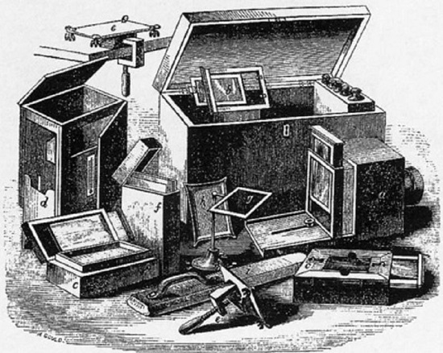

ลองทำมั่ว ๆ แต่แผ่นนี้ภาพเข้มขึ้นมากเลย
#ถึงรูปจะเบลอแต่พี่ก็จะคิดค้นเธอต่อไป
ปี 1824

Louis-Jaques-Mandé Daguerre
ได้ค้นพบวิธีการที่ทำให้เกิดภาพลงบนแผ่นทองแดงเคลือบเงิน
ปี 1826
เรียกวิธีนั้นว่า Heliography
Joseph Nicephore Niepce
ได้ค้นพบวิธีการบันทึกภาพลงแผ่นดีบุกโดยใช้แสงจากธรรมชาติเรียกวิธีนั้นว่า Heliography
ในที่สุด...ภาพเมืองก็มา #ตั้งกล้องไว้8ชั่วโมงเอง
อุปกรณ์ถ่ายรูปเยอะมาก ใกล้ได้วิธีสุดท้ายแล้วด้วย
R.I.P. นะเพื่อน Joseph Nicephore Niepce
วิธีการของนายช่วยเราได้มากเลย
#ทีมSilverIodide

พาสามีไปถ่ายรูป นั่งหน้างอรอ 8 ชั่วโมง
เมื่อยคอแทนเลย
#ถ่ายรูปวนไปครัช
#ชีวิตนี้จะถ่ายรูปได้กี่รูป
#โพสต์ท่าเบาๆแค่ครึ่งวัน
ปี 1839
วิธีการนี้ได้ถูกเผยแพร่ไปทั่วโลก ในชื่อ Daguerreotype
วิธีการนี้ได้ถูกเผยแพร่ไปทั่วโลก ในชื่อ Daguerreotype
ในขณะเดียวกัน
ปี 1840
William Henry Fox Talbot
ได้ค้นพบกระบวนการถ่ายภาพด้วย Calotype Process
เป็นกระบวนการถ่ายภาพโดยใช้กระดาษเคลือบ Silver Iodide
เมื่อถ่ายแล้วจะได้ภาพกลับสีต้องนำไปล้างด้วยน้ำยาสร้างภาพจึงจะได้ภาพสีเสมือน
กระบวนการ Calotype ดีกว่า Daguerreotype ตรงที่สามารถทำซ้ำได้


ผ่านไป 30 ปี
ปี 1871
มีlight sensitivity ที่สูงทำให้สามารถถ่ายภาพได้ชัดและคม
เป็นการรวมข้อดีของ calotype คือคุณภาพภายถ่ายที่ดี ทำซ้ำได้(แต่เก็บรักษาได้ไม่นาน)
และ daguerreotype ที่ใช้แผ่นเพลตที่แพง (ทำซ้ำไม่ได้)
Dr. Richard L. Maddox
ได้ค้นพบกระบวนการเพลตแห้ง โดยใช้เจลาตินเป็นตัวเคลือบแผ่นเพลตกระจก โดยexposure น้อยกว่า 1วินาทีมีlight sensitivity ที่สูงทำให้สามารถถ่ายภาพได้ชัดและคม
เป็นการรวมข้อดีของ calotype คือคุณภาพภายถ่ายที่ดี ทำซ้ำได้(แต่เก็บรักษาได้ไม่นาน)
และ daguerreotype ที่ใช้แผ่นเพลตที่แพง (ทำซ้ำไม่ได้)
ถ่ายเสร็จไว ได้งานดี ราคามิตรภาพ
#งานเสร็จแล้วจะเล่นTagอะไรก็ได้
#ให้เม้นว่าเราควรทำอาชีพอะไร
#จะบอกส่วนที่ชอบที่สุดของคนเม้นแบบจริงใจ

ผ่านไป 18 ปี
แผ่นเหล็กไม่ต้อง ของเราใช้แผ่นเซลลูลอย
#อ่าวเสร็จแล้วหรอ #งานเสร็จเร็วจัง #ไม่ต้องยืนรอแปดชั่วโมง #รอรับภาพได้ #ภาพสีก็มี #งานดีไม่มีใครเกิน
#อ่าวเสร็จแล้วหรอ #งานเสร็จเร็วจัง #ไม่ต้องยืนรอแปดชั่วโมง #รอรับภาพได้ #ภาพสีก็มี #งานดีไม่มีใครเกิน

ผ่านมาจนปัจจุบัน
อีกทอล์คนึงที่เราไม่อยากให้คุณพลาด!
พบกับทอล์คสุดท้ายในงาน #TEDxHistorySCI ครั้งนี้ ที่จะมาเล่าให้คุณฟังว่า
กล้องดิจิตอลเข้ามาเปลี่ยนชีวิตคุณได้อย่างไร??
พบกับทอล์ค “เปิดมุมคิด ชีวิตดิจิตอล”
พบกับทอล์คสุดท้ายในงาน #TEDxHistorySCI ครั้งนี้ ที่จะมาเล่าให้คุณฟังว่า
กล้องดิจิตอลเข้ามาเปลี่ยนชีวิตคุณได้อย่างไร??
พบกับทอล์ค “เปิดมุมคิด ชีวิตดิจิตอล”
ขอบคุณครับ